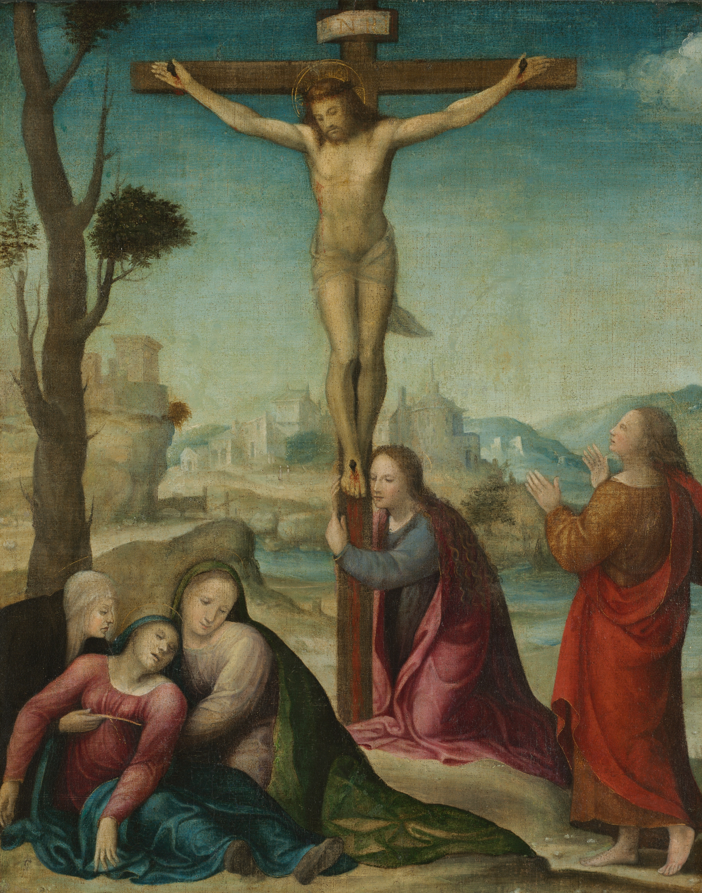

The Crucifixion
Follower of Sodoma · 1916.786
Official museum object record
Approved research slots (9)
COV-pray.seven_wordsCOV-pray.stationsSTG-pray.five_wounds-02STG-pray.five_wounds-03STG-pray.seven_words-01STG-pray.seven_words-02STG-pray.seven_words-04STG-pray.seven_words-05STG-pray.tenebrae-02